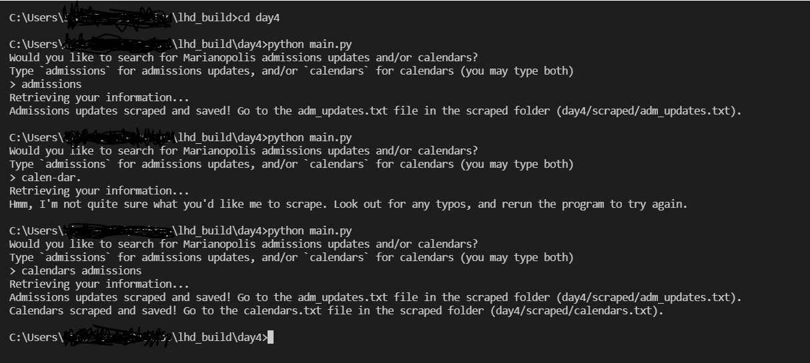

For day 4 of LHD: Build, I decided to brush up on my Python skills and try coding a web scraper. Unfortunately, it's not configured to be live-demoed on this site, but you can still try it out!
This page is also where you'll find detailed instructions on using my simple web scraper — if you're a Quebec high school student applying to CEGEP, this scraper might interest you! (If not, I hope the coding aspect of it does!)
Firstly, it's important to know that there are two versions of this scraper:
As the name states, the self-updating version doesn't require any interaction with the user — its job is just to scrape and update with information daily. For the command-line tool, however, there are a few steps to complete in order to use it yourself.
Before you start, make sure to have Python installed on your computer.
Firstly, go to the GitHub repo hosting this site (and my 2022 LHD: Build code) https://github.com/cw118/lhd_build. You'll want to fork the repository (click the button that says "Fork" near the top), then clone it to your computer. (Note that you don't actually need the entire repo — if you'd like, you can also just download the files in the day4 folder.
If you cloned the repository, feel free to delete all the files except for the day4 folder. This is the folder containing the scraper's Python script, as well as two empty text files in a folder named scraped that the script will write to when you run the program. As for the image files, scraper-cli.png and scraper-python-settings.png, they can be deleted without a problem (these are the images displayed lower on this very page).
Open your terminal and navigate to the directory containing the Python script, main.py. (In other words, make sure you're in the same folder as the location of the main.py file!)
Once you're in the right directory, you'll need to download some Python modules. Since these have all been "saved" to the requirements.txt file for you, you can simply run this command: pip install -r requirements.txt
Now you're ready to use the scraper CLI! Just type python main.py to run the Python script.
Some simple instructions should appear in your terminal — follow those and type whichever scrape option you'd like ("admissions", "calendars" or even both!). Then, once you're sure there aren't any spelling errors, press Enter to start the scraper.
Once the scraper's finished, you'll see where the results were written to (in what file) in your terminal. Open up the file(s) to see what the scraper fetched from the website(s) for you!
And yeah, that's about it. The scraper is very basic (and admittedly, probably not the most useful) and easy to use — you can also see an image of the command-line tool in action below:
It's possible that the links used by the web scraper get moved or even deleted in the future — if this is the case, the Python script will detect the problem and you'll get a suggestion to report the issue at my lhd_build GitHub repository.
If you're getting a FileNotFound error and you're using VS Code, open up (terminal) settings, search for "python", and make sure you have "Execute In File Dir" checked:
lhd_build GitHub repository.